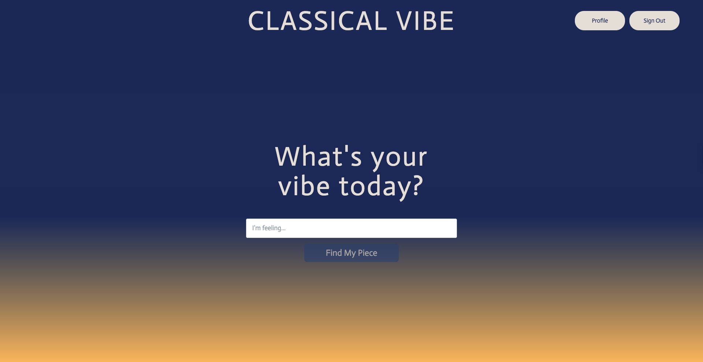
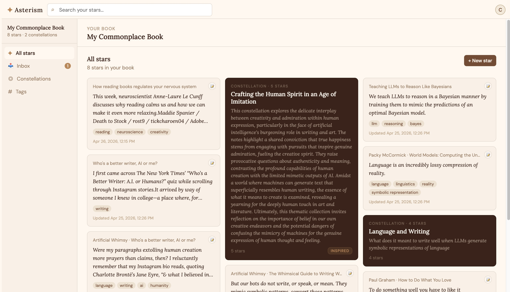

About me
I'm a product data scientist at Google working on Multimodal Search and a graduate student in AI at the University of Texas at Austin. I work on AI product problems where user behavior and model behavior are both messy, and I’m usually focused on making those patterns measurable enough to guide product decisions.
Most of my career has been about turning messy, ambiguous problems into clear product direction. At Google, that meant understanding emerging multimodal search behaviors, translating model performance gaps into roadmap priorities, and building agents and LLM-powered tools to automate routine analyses. At Meta's Reality Labs, I drove product investment decisions for VR social experiences on Quest headsets, advocating for users navigating genuinely novel interaction paradigms. In both places, I've been most energized when the product-market fit isn't obvious yet.
I studied Economics at the University of Chicago, where I got obsessed with how data and human behavior intersect, a thread that's run through everything since.
Outside of work, I build AI-powered tools for music discovery, reading, and personal productivity. You can also find me reading at book club, training aerial silks sequences, or prototyping new product ideas.
Where I've worked
Present
Sep 2024
What I've built


Prototypes
Side projects and prototypes, built to learn or just for fun.